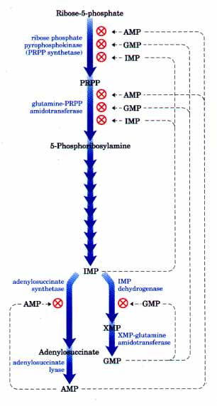
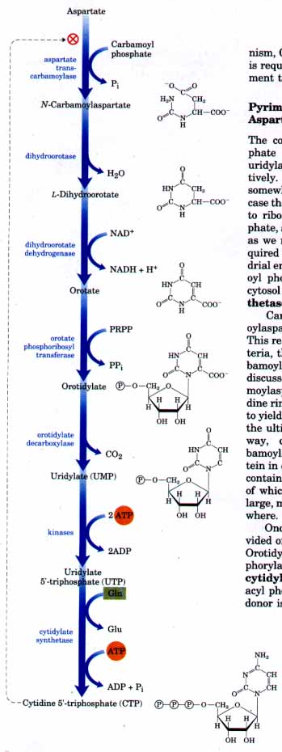
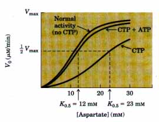
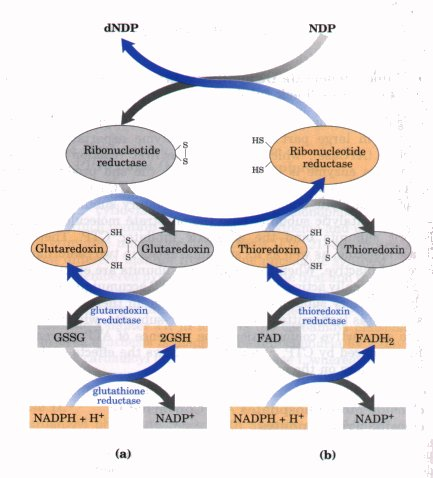
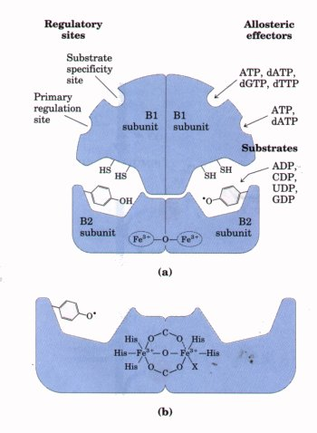
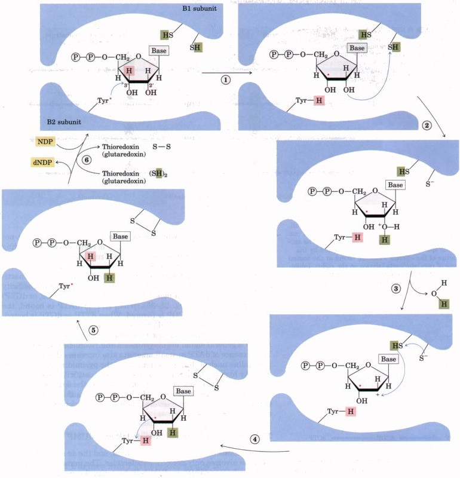
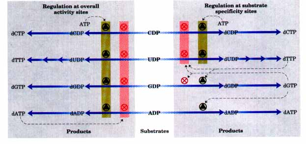
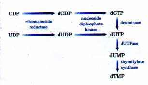
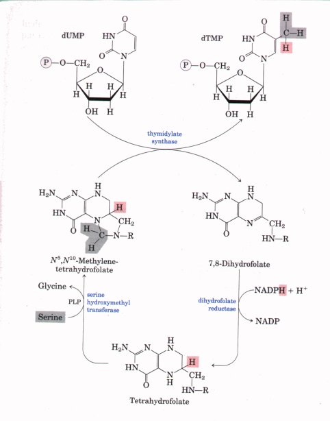

| Three major feedback mechanisms
cooperate in regulating the overall rate of de novo
purine nucleotide synthesis and the relative rates of
formation of the two end products, adenylate and
guanylate (Fig. 21-29). The first of these control
mechanisms is exerted on the first reaction that is
unique to purine synthesis-the transfer of an amino group
to PRPP to form 5-phosphoribosylamine. This reaction is
catalyzed by the allosteric enzyme glutamine-PRPP
amidotransferase, which is inhibited by the end products
IMP, AMP, and GMP. These same nucleotides inhibit the
synthesis of PRPP from ribose phosphate by ribose
phosphate pyrophosphokinase. AMP and GMP act
synergistically in this inhibition. Thus, whenever either
AMP or GMP accumulates to excess, the first step in its
biosynthesis from PRPP is partially inhibited. In the second control mechanism, exerted at a later stage, an excess of GMP in the cell inhibits formation of xanthanylate from inosinate by IMP dehydrogenase, without affecting the formation of AMP (Fig. 21-29). Conversely, an accumulation of adenylate results in inhibition of formation of adenylosuccinate by adenylosuccinate synthetase, without affecting the biosynthesis of GMP. In the third mechanism, GTP is required in the conversion of IMP to AMP, whereas ATP is required to form GMP from IMP (Fig. 21-28), a reciprocal arrangement that tends to balance synthesis of the two ribonucleotides. |
 Figure 21-29 Feedback control mechanisms in the biosynthesis of adenine and guanine nucleotides in E. coli. Regulation of these pathways varies in other organisms. |
The common pyrimidine ribonucleotides are cytidine 5'-monophosphate (CMP; cytidylate) and uridine 5'-monophosphate (UMP; uridylate), which contain the pyrimidines cytosine and uracil, respectively. Pyrimidine nucleotide biosynthesis (Fig. 21-30) proceeds in a somewhat different manner from purine nucleotide synthesis; in this case the six-membered pyrimidine ring is made first and then attached to ribose-5-phosphate. Required in this process is carbamoyl phosphate, also an intermediate in the urea cycle (see Fig. 17-11). However, as we noted in Chapter 17, in animals the carbamoyl phosphate required in urea synthesis is made in the mitochondria by a mitochondrial enzyme, carbamoyl phosphate synthetase I, whereas the carbamoyl phosphate required in pyrimidine biosynthesis is made in the cytosol by a different form of the enzyme, carbamoyl phosphate synthetase II. Carbamoyl phosphate reacts with aspartate to yield N-carbamoylaspartate in the first committed step of pyrimidine biosynthesis. This reaction is catalyzed by aspartate transcarbamoylase. In bacteria, this step is highly regulated, and bacterial aspartate transcarbamoylase is one of the most thoroughly studied allosteric enzymes, as discussed again below. By removal of water from N-carbamoylaspartate, a reaction catalyzed by dihydroorotase, the pyrimidine ring is closed to form r,-dihydroorotate. This compound is oxidized to yield the pyrimidine derivative orotate, a reaction in which NAD+ is the ultimate electron acceptor. The first three enzymes in this pathway, carbamoyl phosphate synthetase II, aspartate transcarbamoylase, and dihydroorotase, are part of a single trifunctional protein in eukaryotes. The protein, which is known by the acronym CAD, contains three identical polypeptide chains (each of M,. 230,000), each of which has active sites for all three reactions. This suggests that large, multienzyme complexes may be the rule in this pathway as elsewhere. Once orotate is formed, the ribose-5-phosphate side chain, provided once again by PRPP, is attached to orotate to yield orotidylate. Orotidylate is then decarboxylated to yield uridylate, which is phosphorylated to UTP. CTP is formed from UTP by the action of cytidylate synthetase (Fig. 21-30). This reaction occurs by way of an acyl phosphate intermediate (consuming one ATP), and the nitrogen donor is glutamine in animals or NH4 in some bacteria. |
 Figure 21-30 Biosynthesis of the pyrimidine nucleotides UTP and CTP via orotidylate. The ribose-5-phosphate is added to the completed pyrimidine ring by orotate phosphoribosyl transferase. |
| The regulation of the rate of pyrimidine nucleotide synthesis in bacteria occurs in large part through the enzyme aspartate transcarbamoylase (ATCase), which catalyzes the first reaction in the sequence. This enzyme is inhibited by CTP, the end product of this sequence of reactions (Fig. 21-30). The bacterial ATCase molecule consists of six catalytic subunits and six regulatory subunits (see Fig. 8-26). The catalytic subunits bind the substrate molecules, and the allosteric subunits bind the allosteric inhibitor CTP. The entire ATCase molecule, as well as its subunits, exists in two conformations, active and inactive. When the regulatory subunits are empty, the enzyme is maximally active. However, when CTP accumulates it is bound by the regulatory subunits, causing a change in their conformation. This change is transmitted to the catalytic subunits, which then also shift to an inactive conformation. The presence of ATP prevents the changes induced by CTP. Figure 21-31 shows the effects of the allosteric regulators on the activity of ATCase. |  Figure 21-31 Effect of the allosteric modulators CTP and ATP on the rate of conversion of aspartate into N-carbamoylaspartate by aspartate transcarbamoylase. The addition of 0.8 mM CTP, the allosteric inhibitor of ATCase, increases the K0.5 for aspartate (lower curve). ATP at 0.6 mM fully reverses this effect (middle curve). |
Nucleotides are generally used in biosynthesis in the form of nucleoside triphosphates. The conversion pathways are common to all cells. The phosphorylation of AMP to ADP is promoted by adenylate kinase, in the reaction
ATP + AMP== 2ADP
The ADP so formed is then phosphorylated to ATP by the glycolytic enzymes or through oxidative phosphorylation.
ATP also brings about the formation of other nucleoside diphosphates by the action of a class of enzymes called nucleoside monophosphate kinases. These enzymes, which are generally specific for a particular base but nonspecific as to whether the sugar is ribose or deoxyribose, catalyze the reaction
ATP + NMP== ADP + NDP
The efficient cellular systems for rephosphorylation of ADP to ATP tend to pull this reaction in the direction of products.
Nucleoside diphosphates are converted to triphosphates by the action of a ubiquitous enzyme, nucleoside diphosphate kinase, which catalyzes the reaction
NTPD + NDP== NDPD + NTPA
This enzyme is notable in that it is nonspecific for the base (purines or pyrimidines) or for ribose or deoxyribose. This nonspecificity applies to both phosphate acceptor (A) and donor (D), although the donor is almost invariably ATP because it is present in high concentrations as a respiratory product under aerobic conditions.
| Deoxyribonucleotides, the building
blocks of DNA, are derived from the corresponding
ribonucleotides by reactions in which the 2'-carbon atom
of the n-ribose portion of the ribonucleotide is directly
reduced to form the 2'-deoxy derivative. The substrates
for this reaction, catalyzed by the enzyme ribonucleotide
reductase, are ribonucleoside diphosphates. In this way,
for example, adenosine diphosphate (ADP) is reduced to
form 2'-deoxyadenosine diphosphate (dADP), and GDP is
reduced to dGDP. The reduction of the n-ribose portion of the ribonucleoside diphosphates to 2'-deoxy-n-ribose requires a pair of hydrogen atoms, which are ultimately donated by NADPH via an intermediate hydrogencarrying protein, thioredoxin. This protein has pairs of -SH groups that carry hydrogen atoms from NADPH to the ribonucleoside diphosphate. The oxidized or disulfide form of thioredoxin is reduced by NADPH in a reaction catalyzed by thioredoxin reductase (Fig. 21-32). The reduced thioredoxin is then used by ribonucleotide reductase to reduce the nucleoside diphosphates (NDPs) to deoxyribonucleoside diphosphates (dNDPs). A second source of reducing equivalents for ribonucleotide reductase is glutathione (GSH), which serves as the reductant for a protein closely related to thioredoxin called glutaredoxin. Reduced glutaredoxin then transfers the reducing power of glutathione to ribonucleotide reductase (Fig. 21-32). Ribonucleotide reductase is notable in that its reaction mechanism provides the best-characterized example of the involvement of free radicals in biochemical transformations. As such, it is a prototype for reactions involving radical intermediates, once thought to be rare in biological systems. The enzyme in E. coli and most eukaryotes is a dimer of two subunits, Bl and B2 (Fig. 21-33). The Bl subunit contains two kinds of regulatory effector-binding sites as described below. The two active sites of the enzyme are formed at the interface between the Bl and B2 subunits. At each active site, Bl contributes two thiol groups required for activity and B2 contributes a stable tyrosyl radical. The B2 subunit also has a binuclear iron cofactor that helps generate and stabilize the tyrosyl radicals (Fig. 21-33). |
 Figure 21-32 Reduction of ribonucieotides by ribo- nucleotide reductase. Electrons are transmitted (blue arrows) to the enzyme from NADPH via either (a) glutaredoxin or (b) thioredoxin. The sulfide groups in glutaredoxin reductase are contributed by two molecules of bound glutathione (GSH). Note that thioredoxin reductase is a flavoenzyme, with FAD as prosthetic group. Oxidized glutathione is denoted GSSG (Fig. 21-22).  Figure 21-33 (a) Model for the structure of ribonucleotide reductase. The results of effector binding to the two types of regulatory sites are shown in Fig. 21-35. (b) The postulated structure of the binuclear iron cofactor and the tyrosyl radical. |
A likely mechanism for ribonucleotide reductase is illustrated in Figure 21-34. The 3'-ribonucleotide radical formed in step 1 helps stabilize the cation subsequently formed at the 2' carbon after the loss of H20 (steps 2 and 3 ). Two one-electron transfers accompanied by oxidation of the dithiol of Bl reduce the radical cation and regenerate the 3'-ribonucleotide radical (step 4). Step 5 is the reverse of step l , regenerating the tyrosyl radical and forming the deoxy product. The oxidized dithiol of Bl is reduced by thioredoxin or glutaredoxin to complete the cycle (step 6).

Figure 21-34 Proposed mechanism for reduction of ribonucleotides by ribonucleotide reductase. The active thiol groups are on the Bl subunit of the enzyme; the tyrosyl radical is on the B2 subunit (see Fig. 21-33). Steps 1 through 6 are described in the text.

Figure 21-35 Regulation of ribonucleotide reductase by deoxynucleoside triphosphates. The overall activity of the enzyme is affected by binding at one type of regulatory site (shown on the left). The substrate specificity of the enzyme is affected by the nature of the effector molecule bound at the second type of regulatory site (shown on the right). Inhibition or stimulation of the enzyme's activity with the four different substrates is indicated. The pathway from dUDP to dTTP is described later (see Fig. 21-36).
The regulation of ribonucleotide reductase is unusual in that not only its activity but its substrate specificity is regulated by the binding of effector molecules. There are two types of regulatory sites on each Bl subunit (Fig. 21-33). One type affects overall enzyme activity and binds either ATP, which activates the enzyme, or dATP, which inactivates it. The second type of regulatory site alters substrate specificity in response to the effector molecule (either ATP, dATP, dTTP, or dGTP) that is bound there (Fig. 21-35). When ATP or dATP is bound, the reduction of UDP and CDP is favored. When dTTP or dGTP is bound, the reduction of GDP and ADP, respectively, is stimulated. The scheme is designed to provide a balanced pool of precursors for DNA synthesis. ATP is a general signal for biosynthesis and ribonucleotide reduction. The presence of dATP in small amounts also increases the reduction of pyrimidine nucleotides. An oversupply of the pyrimidine dNTPs is signaled by high levels of dTTP, which shifts the specificity to favor reduction of GDP. High levels of dGTP, in turn, shift the specificity to ADP reduction, and high levels of dATP shut the enzyme down. These effectors are thought to induce several distinct enzyme conformations with altered specificities.
DNA contains thymine rather than uracil, and the de novo pathway to thymine involves only deoxyribonucleotides. The immediate precursor of thymidylate (dTMP) is dUMP. In bacteria, the pathway to dUMP begins with formation of dUTP, either by deamination of dCTP or by phosphorylation of dUDP (Fig. 21-36). The dUTP is converted to dUMP by a dUTPase. This latter reaction must be efficient to keep dUTP pools low and prevent the incorporation of uridylate into DNA. The conversion of dUMP to dTMP is catalyzed by the enzyme thymidylate synthase. In this reaction a one-carbon unit is transferred from N5,N1?methylenetetrahydrofolate to dUMP at the hydroxymethyl (-CH2OH) oxidation level (see Fig. 17-19), then reduced to a methyl group (Fig. 21-37). The reduction comes at the expense of oxidation of tetrahydrofolate to dihydrofolate and is unusual in reactions using tetrahydrofolate as a cofactor. (Details of this reaction are shown in Fig. 21-43.) Dihydrofolate is reduced again to tetrahydrofolate by the enzyme dihydrofolate reductase. This regeneration of tetrahydrofolate is essential for the many processes that depend on this form of the coenzyme. In at least one protist, thymidylate synthase and dihydrofolate reductase are combined in a single polypeptide as a bifunctional protein. |
 Figure 21-36 Origin of thymidylate (dTMP). The pathways are shown beginning with the reaction catalyzed by ribonucleotide reductase. Details of the thymidylate synthase reaction are shown in Fig. 21-37.  Figure 21-37 Conversion of dUMP to dTMP by thymidylate synthase and dihydrofolate reductase. Serine hydroxymethyl transferase is required for regeneration of the N5,N10-methylene form of H4 folate. In the synthesis of dTMP, all three hydrogens of the added methyl group are derived from the N5,N10-methylenetetrahydrofolate, as shown in red and gray. |